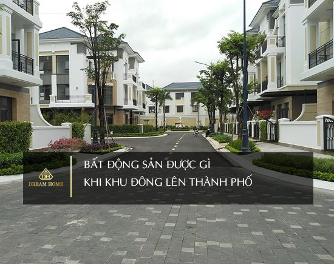
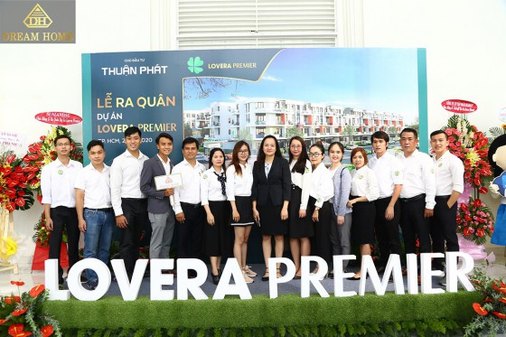
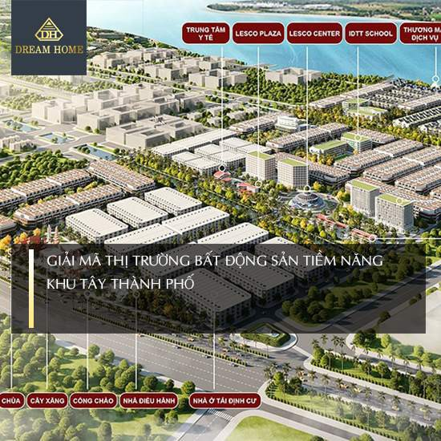
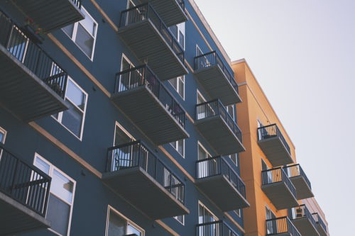
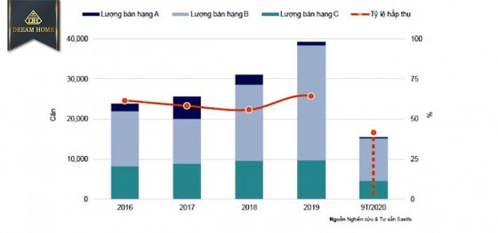

BẤT ĐỘNG SẢN ĐƯỢC GÌ KHI KHU ĐÔNG LÊN THÀNH PHỐ
Như DREAM HOME đã có bài nói về bất động sản
khu Đông, trong số các khu vực hiện nay ở
TP.HCM, khu Đông là nơi có thị trường BĐS sôi
động nhất trong những năm gần đây. Nguyên do
của sự phát triển này gồm nhiều yếu tố.

DREAM HOME - PHÁP LÝ TƯỜNG MINH VỮNG TIN MUA BÁN
Dream Home là một công ty hàng đầu mà các chủ đầu tư/ khách hàng
tin tưởng trong lĩnh vực môi giới bất động sản khu Đông và Nam
tp.HCM chuyên môi giới, tư vấn bất động sản đạt chuẩn quy định,
đầy đủ pháp lý cho khách hàng vì Dream Home mang lại sự yên tâm
cho khách hàng, do bởi Dream Home có kinh nghiệm đầu tư, môi giới
trên 5 năm
CÁC CHI PHÍ PHÁT SINH KHI MUA NHÀ CẦN LƯU Ý
Mua nhà luôn là quyết định lớn của mỗi gia đình. Tuy nhiên
cần lưu ý các chi phí phát sinh khi mua nhà, đặc biệt là khi
bạn mua để ở. Các chi phí này cụ thể là gì hãy cùng Dream Home
tìm hiểu thêm về phát sinh khi mua nhà.

GIẢI MÃ THỊ TRƯỜNG BẤT ĐỘNG SẢN TIỀM NĂNG KHU TÂY THÀNH PHỐ
Thị trường bất động sản nhà đất khu Tây thành phố được xem
là một trong những điểm nóng trong thời gián qua. Do có nhiều
tiềm năng phát triển mạnh mẽ với diện tích còn trống lớn, hạ
tầng kết nối thuận lợi và sự gia tăng dân số mở ra nhiều cơ
hội việc làm. Liệu các nhà đầu tư có nên đầu tư vào thị trường
khu Tây trong thời điểm này?

CHUNG CƯ 50 NĂM LÀ GÌ - NHỮNG ĐIỀU CẦN BIẾT VỀ CHUNG CƯ 50 NĂM
Ngày nay đa số các dự án chung cư đều là chung cư 50 năm,
bạn đang lăn tăn khái niệm chung cư 50 năm, mua chung cư 50
năm sau 50 năm còn lại gì chúng ta cùng đi tìm hiểu.

TỔNG HỢP TẤT CẢ BÁO CÁO THỊ TRƯỜNG QUÝ 3/2020. KHU ĐÔNG DẪN ĐẦU NGUỒN CUNG CĂN HỘ MỚI
Dream Home tổng hợp các báo cáo thị trường bất động sản trong Quý 3 năm 2020 của các tổ chức nghiên cứu thị trường tại Tp HCM. Khu Đông tiếp tục dẫn đầu nguồn cung tại TP HCM.
“MẸO” ĐĂNG TIN BÁN NHÀ ĐẤT ĐẠT HIỆU QUẢ NHẤT - ĐỪNG BỎ QUA
Bài viết tổng hợp mẹo đăng tin bán nhà đất đạt hiệu quả cao thu hút triệu người xem mỗi ngày. Dễ dàng - nhanh chóng- miễn phí - hiệu quả cao
CĂN HỘ CHUNG CƯ GIÁ RẺ TPHCM: NÊN MUA HAY KHÔNG MUA? KINH NGHIỆM MUA NHÀ CHUNG CƯ GIÁ RẺ CHỈ VỚI 2 TỶ ĐỒNG
Nhu cầu về nhà ở tại TPHCM ngày càng tăng, nhưng để sở hữu được căn hộ chung cư giá rẻ TPHCM là điều không dễ dàng nếu điều kiện kinh tế của bạn hạn chế. Vậy phải làm thế nào?
KINH NGHIỆM MUA CĂN HỘ CHUNG CƯ TPHCM VÀ GỢI Ý NHỮNG CĂN HỘ GIÁ RẺ BẠN CÓ THỂ MUA
Bất động sản (BĐS) TPHCM hiện được quan tâm nhiều nhất bởi đây là thị trường BĐS hot nhất. Cùng Dream Home tìm hiểu kinh nghiệm và gợi ý cách mua căn hộ chung cư tphcm